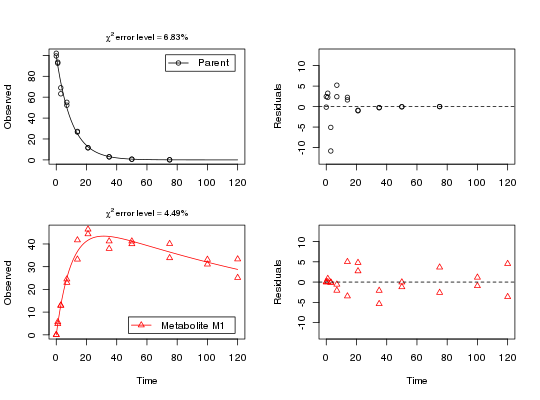

Plot the observed data and the fitted model of an mkinfit object
Usage
# S3 method for mkinfit plot(x, fit = x, obs_vars = names(fit$mkinmod$map), xlab = "Time", ylab = "Observed", xlim = range(fit$data$time), ylim = "default", col_obs = 1:length(obs_vars), pch_obs = col_obs, lty_obs = rep(1, length(obs_vars)), add = FALSE, legend = !add, show_residuals = FALSE, maxabs = "auto", sep_obs = FALSE, rel.height.middle = 0.9, lpos = "topright", inset = c(0.05, 0.05), show_errmin = FALSE, errmin_digits = 3, ...) plot_sep(fit, sep_obs = TRUE, show_residuals = TRUE, show_errmin = TRUE, ...)
Arguments
- x
- Alias for fit introduced for compatibility with the generic S3 method.
- fit
-
An object of class
mkinfit. - obs_vars
- A character vector of names of the observed variables for which the data and the model should be plotted. Defauls to all observed variables in the model.
- xlab
- Label for the x axis.
- ylab
- Label for the y axis.
- xlim
- Plot range in x direction.
- ylim
- Plot range in y direction.
- col_obs
- Colors used for plotting the observed data and the corresponding model prediction lines.
- pch_obs
- Symbols to be used for plotting the data.
- lty_obs
- Line types to be used for the model predictions.
- add
- Should the plot be added to an existing plot?
- legend
- Should a legend be added to the plot?
- show_residuals
- Should residuals be shown? If only one plot of the fits is shown, the residual plot is in the lower third of the plot? Otherwise, i.e. if "sep_obs" is given, the residual plots will be located to the right of the plots of the fitted curves.
- maxabs
- Maximum absolute value of the residuals. This is used for the scaling of the y axis and defaults to "auto".
- sep_obs
- Should the observed variables be shown in separate subplots? If yes, residual plots requested by "show_residuals" will be shown next to, not below the plot of the fits.
- rel.height.middle
- The relative height of the middle plot, if more than two rows of plots are shown.
- lpos
-
Position(s) of the legend(s). Passed to
legendas the first argument. If not length one, this should be of the same length as the obs_var argument. - inset
-
Passed to
legendif applicable. - show_errmin
- Should the FOCUS chi2 error value be shown in the upper margin of the plot?
- errmin_digits
- The number of significant digits for rounding the FOCUS chi2 error percentage.
- ...
-
Further arguments passed to
plot.
Description
Solves the differential equations with the optimised and fixed parameters
from a previous successful call to mkinfit and plots
the observed data together with the solution of the fitted model.
Value
-
The function is called for its side effect.
Examples
# One parent compound, one metabolite, both single first order, path from # parent to sink included, use Levenberg-Marquardt for speed SFO_SFO <- mkinmod(parent = mkinsub("SFO", "m1", full = "Parent"), m1 = mkinsub("SFO", full = "Metabolite M1" ))Successfully compiled differential equation model from auto-generated C code.
# Show the observed variables separately plot(fit, sep_obs = TRUE, lpos = c("topright", "bottomright"))
# Show the observed variables separately, with residuals plot(fit, sep_obs = TRUE, show_residuals = TRUE, lpos = c("topright", "bottomright"), show_errmin = TRUE)